X20–X30¶
Euler Line Centers
Classical centers lying on the Euler line X2 X3, including the De Longchamps point, Schiffler point, Exeter point, far-out point, homothetic center of the orthic and tangential triangles, and the Euler infinity point.
X20–X30 (Euler Line Centers) — 10 representative centers (from 11 in collection) constructed on acute reference triangle \((a, b, c) = (5, 6, 7)\) with unit baseline AB = \(1\).¶
Group Preamble — Centers 20-30 (Points on the Euler line)
2- 5, 140, 186, 199, 235, 237, 297, 376- 379,381- 384,
401- 475, 546- 550, 631, 632 (and others) lie on the Euler line.
X20DE LONGCHAMPS POINT
X20 = anticomplement of X4
X21SCHIFFLER POINT
Write I for the incenter; the Euler lines of the four triangles IBC, ICA, IAB, and ABC concur in X21. This configuration extends to Kirikami-Schiffler points and generalizations found by Peter Moses, as introduced just before X3648.

X22EXETER POINT
X22 is the perspector of the circummedial triangle and the tangential triangle; also X22 = X55-of-the-tangential triangle if ABC is acute. See the note just before X1601 for a generalization.

X23FAR-OUT POINT
X23 = inverse-in-circumcircle of X2
X24PERSPECTOR OF ABC AND ORTHIC-OF-ORTHIC TRIANGLE
X24 is the perspector of ABC and orthic-of-orthic triangle.
X25HOMOTHETIC CENTER OF ORTHIC AND TANGENTIAL TRIANGLES
Constructed as indicated by the name; also X25 is the pole of the orthic axis (the line having trilinear coefficients cos A : cos B : cos C) with respect to the circumcircle.

X26CIRCUMCENTER OF THE TANGENTIAL TRIANGLE
Theorems involving X26, published in 1889 by A. Gob, are discussed in
Roger A. Johnson, Advanced Euclidean Geometry, Dover, 1960, 259-260.
X27CEVAPOINT OF ORTHOCENTER AND CLAWSON CENTER
X27 is the cevapoint of orthocenter and Clawson center.
X28CEVAPOINT OF X19 AND X25
X28 is the cevapoint of X19 and X25.
X29CEVAPOINT OF INCENTER AND ORTHOCENTER
X29 is the cevapoint of incenter and orthocenter.
X30EULER INFINITY POINT
X30 is the point of intersection of the Euler line and the line at infinity. Thus, each of the lines listed below is parallel to the Euler line.